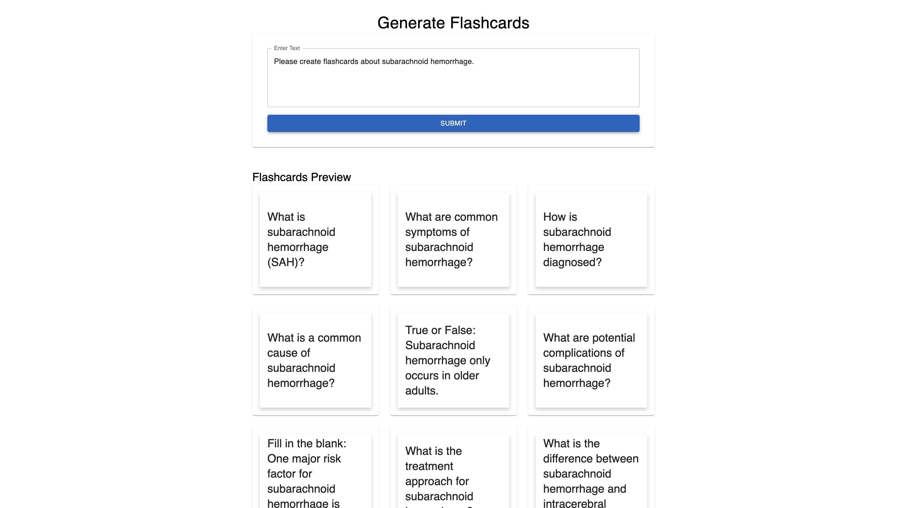
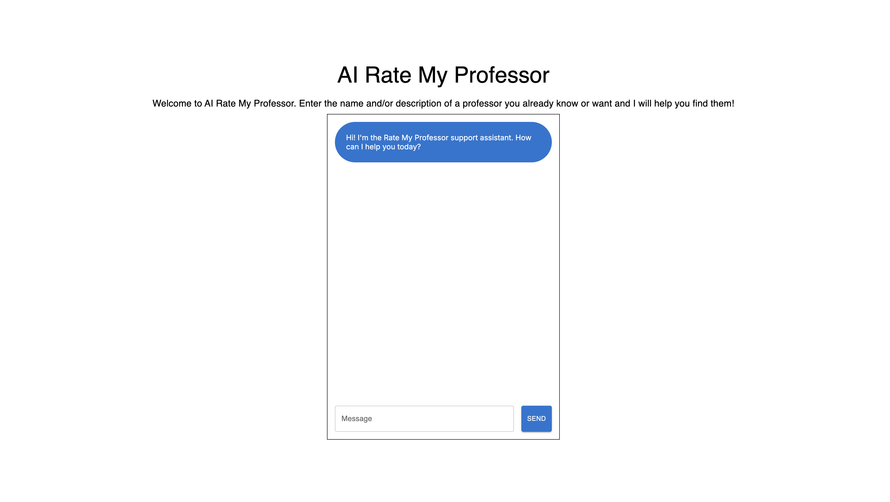
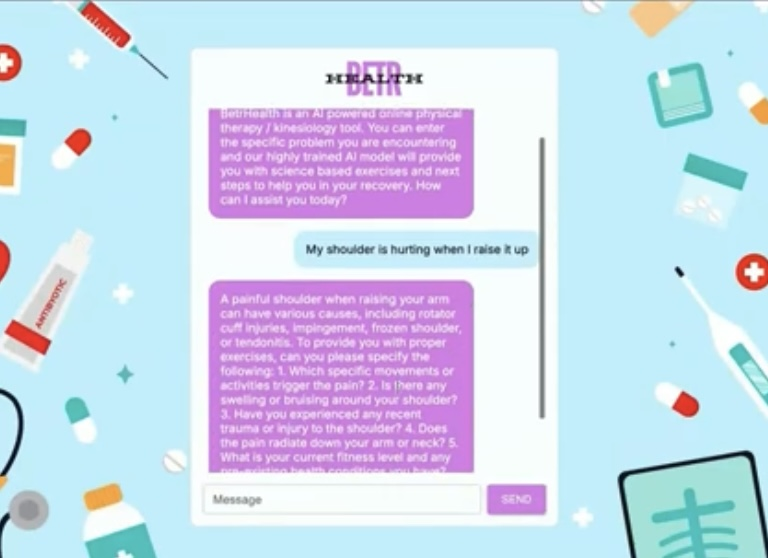
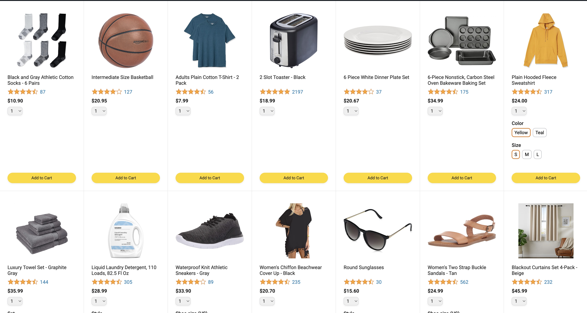
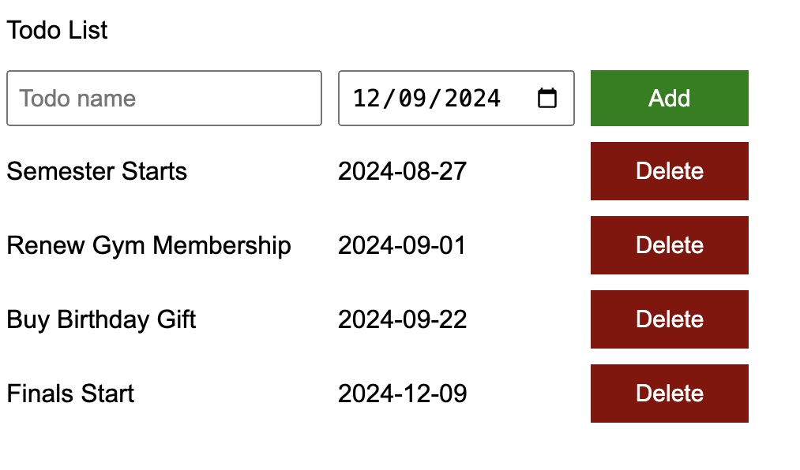
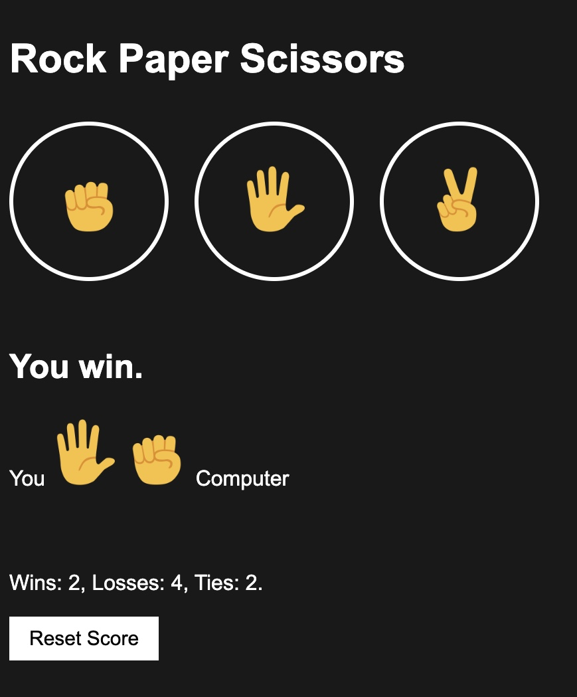
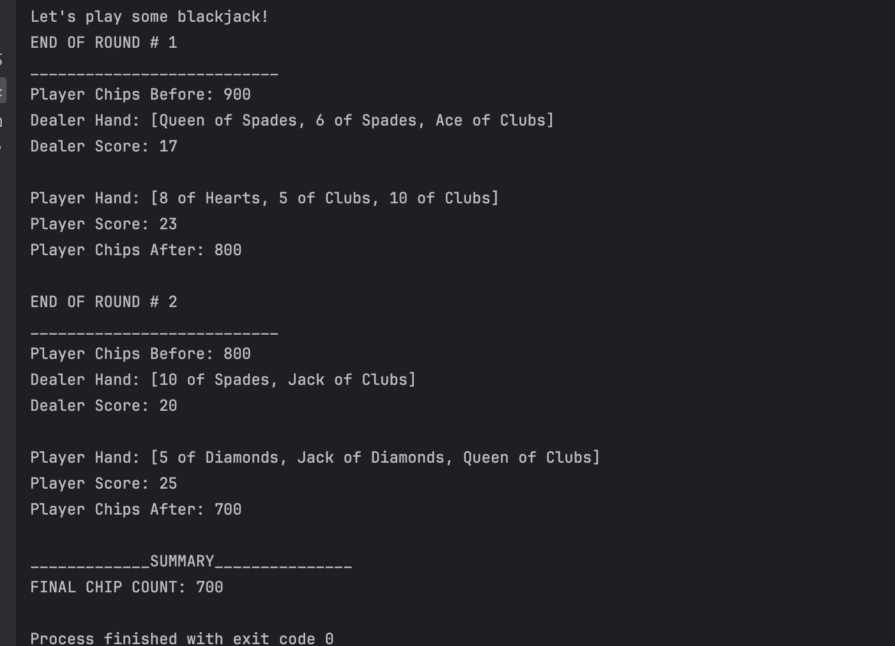

AI Flashcard Developer
This project creates a flashcard platform as a SaaS using Next.js for the front-end structure, with React managing user interactions and card functionality. It includes JavaScript for dynamic card behavior and CSS for styling. Users can create, edit, and manage flashcards, with storage capabilities for saving their work. The project likely integrates APIs for database interactions and user authentication. Skills required include front-end development, API handling, JavaScript, and user interface design with React and Next.js.

AI Rate My Professor
This project uses AI to help students rate and evaluate professors, similar to "Rate My Professors." It uses Next.js and React for the front end, managing user input and displaying results. JavaScript and CSS are used for dynamic content and styling. The app integrates machine learning to analyze data and provide professor ratings based on feedback. Skills needed include JavaScript, API integration, data processing, React for the UI, and machine learning techniques for analyzing and predicting trends.

AI Injury Care
The project involves creating an AI-powered chatbot for advising on injury recovery. It asks users about their symptoms and provides medical advice, exercises, or next steps. Built using Next.js and React, it integrates API handling for dynamic information and uses Google Fonts for UI design. The chatbot likely incorporates some NLP (Natural Language Processing) for interpreting user input and possibly machine learning for personalized advice. Skills involved include JavaScript, API integration, AI implementation, CSS, and front-end development using React.
<<<<<<< HEAD
=======
>>>>>>> dc2fde6097cf6ada13c01a703672b5ef5692ec37

E-Commerce Webpage (Full Stack)
Developed a full stack e-commerce website using HTML, CSS, and JavaScript, allowing users to browse and search for products, customize options, manage their cart, and track orders. Implemented advanced features including modules, object-oriented programming, callbacks, promises, and async/await, alongside backend development and external libraries.

Video Streaming Interface Replica (Front End)
Developed a video streaming interface compatible with multiple devices, showcasing and connecting to various video genres. Built using HTML and CSS, leveraging CSS Grid, Flexbox, positioning techniques, responsive design, and media queries to ensure cross-device functionality. Progressed foundational HTML and CSS skills to structure content and style elements.

Retro Pong Game (Python)
Developed a retro two player ping pong game using a school game development library. Key aspects included the implementation of core game mechanics (collision detection, scoring and ball movement) and multiplayer functionality that includes two player interaction ensuring smooth and responsive gameplay.

To-Do List Webpage
Created a to-do list webpage using HTML, CSS, and JavaScript. Users can add tasks with a name and due date, which appear on the page with a delete button for removal. This project involved arrays, loops, the accumulator pattern, DOM manipulation, event handling, and user input validation.

Rock Paper Scissors Webpage
Developed an interactive game using HTML, CSS, and JavaScript. Implemented game logic and dynamic DOM manipulation to display user and computer choices and results. Included score tracking with reset functionality. Utilized built-in JavaScript objects for randomization and ensured responsive design for compatibility across devices.

Blackjack Simulation (Java)
A java based one player game with the dealer as the computer focusing on java basics including inheritance, class development and code implementation. Key elements included dealer logic which involved ensuring the computer follows the standard Blackjack rules, and game mechanics that included blackjack rules, card dealing, hit/stand logic and user betting.